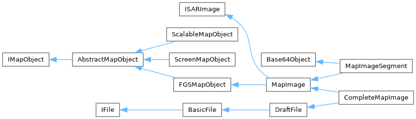
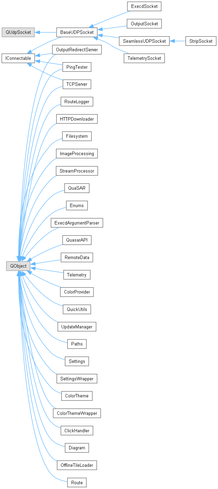
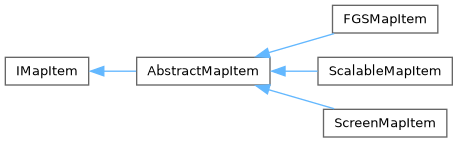
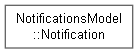
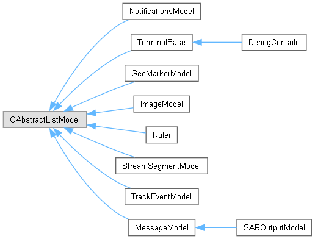
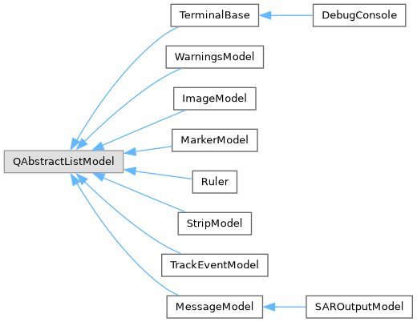

QuaSAR
2.12.0
SAR control software
Загрузка...
Поиск...
Не найдено
Иерархия классов
см. текстовый вид.






Документация по QuaSAR. Последние изменения: Вс 9 Июл 2023 21:22:17. Создано системой
1.9.6